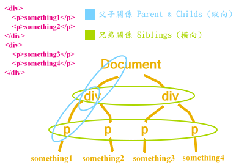

jQuery 篩選元素 (Traversing)
先前談到的選取元素 (selectors) 是直接從根元素去尋找其下的的後代子元素，而我們這裡要探討如何去進一步「篩選」，jQuery 的 Traversing 相關方法能幫你做這些過濾、查訪元素的動作。
Traversing 也就是從某元素進一步去找出跟它有關係(關連)的元素。
過濾元素 (Filtering)
jQuery 有提供一些函數幫助我們方便的「濾出」我們要的目標元素：
取得第 index 個元素 (index 從 0 開始)
.eq( index )
例如，取得匹配的第 3 個元素
$('p').eq(2);
相較於 .get(index) 得到的是 DOM 物件；.eq(index) 則是 jQuery 物件。
找出所有符合表達式條件的元素 (可用逗號分開多個 selector)
.filter(selector)
例如，取得類別為 highlight 的所有段落元素：
$('p').filter('.highlight');
刪除所有符合表達式條件的元素
.not(selector)
例如，從選取到的段落元素中，刪除掉類別為 green 的及 id 為 blueone 的元素：
$('p').not('.green, #blueone');
元素 (節點) 間位置的相互關係
在談如何查訪元素之前，我先用一張簡單的示意圖來說明元素節點間相互的空間關係：

依縱向關係來查訪 (Finding)
// 取得上一階層的父元素
.parent([selector])
// 取得全部的父元素集合 (祖先元素)
.parents([selector])
// 取得(僅)下一階層的所有子元素之集合 (不含 text nodes)
.children([selector])
// 取得全部的子元素 (含 text nodes)
// 也可以用來取得 iframe 的 content document
.contents()
例如：
// 將 li 的父元素 (可能是 <ul> 或 <ol>) 背景改為紅色
$('li').parent().css('background-color', 'red');
// 將 li 的所有祖先元素背景都改為紅色 (直到 <html> 元素)
$('li').parents().css('background-color', 'red');
// 將 li 的所有 <p> 祖先元素背景都改為紅色
$('li').parents('p').css('background-color', 'red');
// 將有 .selected class 的 div 所有子元素顏色改為藍色
$('div').children('.selected').css('color', 'blue');
依橫向關係來查訪 (Finding)
// selector 用來過濾，如果我們只要符合條件的元素
// 取得其後緊鄰的兄弟元素 (同輩元素)
.next([selector])
// 取得從下一個直到最後一個同輩元素
.nextAll([selector])
// 前一個同輩元素
.prev([selector])
// 從前一個直到最開頭的同輩元素
.prevAll([selector])
// 取得其所有同輩元素的集合
.siblings([selector])
依表達式條件來查訪元素 (Finding)
.find(selector)
.find() 跟 .children() 有點像，差別在 .children() 只會找下一層的元素而已。
例如，我們想取得段落下的 span 元素：
// HTML
<p><span>Hello</span> World</p>
// jQuery
$('p').find('span');
// 得到的結果
[<span>Hello</span>]
你也可以寫成下面這樣的型式，其意思同 .find()。其中，第一個參數為查訪條件式；第二個參數則為 jQuery 或 DOM 物件：
$(selector, context)
// 同上面的例子，也可以這樣寫
$('span', $('p'));